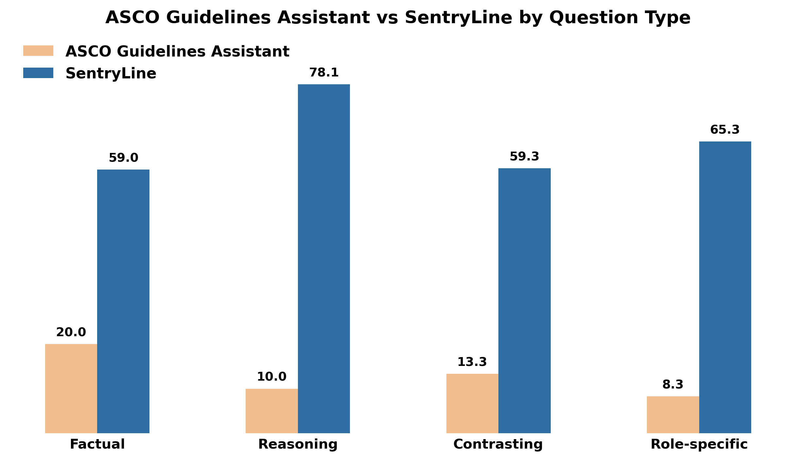
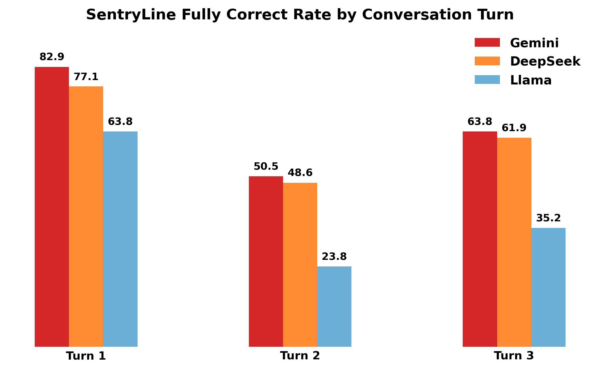

Guideline Retrieval
Searches breast and prostate cancer guideline sources for evidence relevant to the current turn and prior context.
System Overview
Oncology guideline QA is not only a retrieval task. The system must recognize when recommendations change, preserve context across turns, and avoid outdated or unsupported clinical claims.
Searches breast and prostate cancer guideline sources for evidence relevant to the current turn and prior context.
Generates a direct answer with citations, eligibility boundaries, contraindications, dosing context, and guideline rationale.
Checks whether the answer is supported by retrieved evidence and flags unsupported or unsafe claims before final output.
Identifies changed recommendations across living guideline updates and distinguishes current guidance from prior standards.
Main Results
Scores are turn-level LLM-as-judge evaluations against gold answers. D1 scores map to fully correct, partially correct, and incorrect responses.

| Question Type | ASCO Assistant | SentryLine |
|---|---|---|
| Factual | 20.0 | 59.0 |
| Reasoning | 10.0 | 78.1 |
| Contrasting | 13.3 | 59.3 |
| Role-specific | 8.3 | 65.3 |
Values are fully correct rates in percent. SentryLine uses the best backbone per category.
Conversation Robustness
Each benchmark item contains three turns. We evaluate every turn separately and aggregate by turn index to measure whether models preserve clinical context as the conversation evolves.

Clinician-Facing Example
SentryLine identifies the 2026 evidence update: radium-223 plus enzalutamide improved radiographic progression-free survival in mCRPC with bony and nodal disease, while excluding visceral metastases and requiring bone-protective agents.
The answer attributes the recommendation change to the January 2026 living guideline update and the PEACE-3 trial evidence, rather than a single regulatory action.
SentryLine explains that concurrent treatment is supported only for eligible patients and still avoids combination therapy in visceral disease, large nodal disease, and settings without bone protection.
Benchmark